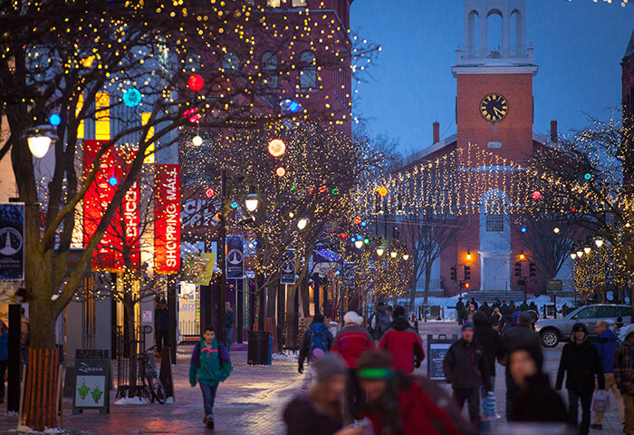
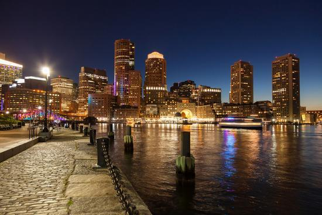

The Early Years
I was born in St. Louis, Missouri and lived there through high school.
College Years
I love to learn and my college years have never really stopped. I will always be taking a course in something. I'm kind of like Buster Bluth without the attachment to my mother. Here are some of the colleges I have attended.
Adult Years?
After moving around a bit, I moved back to St. Louis and fell into a job in Parks and Recreation Department. It was a lot of fun in the beginning, but I stuck around far too long. I tried LC a few years back, but my parents kept encountering health issues that required me to travel to Georgia so it didn't work out that time. Once I heard that LC was going virtual, I reapplied and here I am. It has allowed me to help my parents through this pandemic while moving forward with a career change into something that I really enjoy
Future
 
I have lived in socially conservative states all of my life and given the current political climate, i would like to put an end to that. I would be glad to start my new career anywhere I can get my foot in the door, but ultimately would like to live somewhere that is more open, accepting and that has a strong belief in science. I am thinking the northeast, like a Vermont or Massachusetts. Identifying as Queer so late in life is kind of tough when you have spent a lifetime internalizing the negative views of those around you. Even though things have gotten tons better since I was a kid growing up in Missouri, I still would rather live in a place where I didn't feel the need to self-monitor at at least until I grow more comfortable and actually have a support system in place.